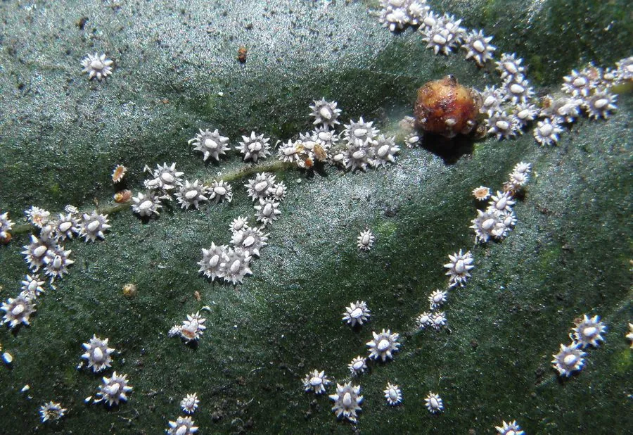

昆虫 · 动物界
日本龟蜡蚧 Ceroplastes japonicus

介壳覆白色龟甲状蜡层、中央常有红褐斑的蚧虫，寄主十分广泛，在枝干上密集成片吸食汁液并诱发煤污病。
- 分类
- 门节肢动物门纲昆虫纲目半翅目科蜡蚧科属蜡蚧属
- 栖息环境
- 栀子、桂花、木兰等园林花木及果树的枝干和叶片
- 地理分布
- 中国大部分地区，以及日本、朝鲜半岛
- 保护级别
- 暂无评估
物种志
日本龟蜡蚧雌成虫介壳长约 2–3 mm，表面覆白色蜡质，隆起呈龟甲状，中央常有红褐色或淡黄色斑块，边缘有 8 个整齐的白色蜡突。若虫椭圆形，淡褐色，固定后开始分泌蜡丝，逐渐形成龟甲状的蜡壳。
日本龟蜡蚧分布于日本、朝鲜半岛和中国大部分地区，寄主十分广泛，包括栀子、桂花、木兰、柑橘、柿、枣和悬铃木等。它一年发生 1 代，以受精雌成虫在枝条上越冬，翌年 5 月前后产卵，6 月若虫孵化。若虫和雌成虫群集在枝干和叶片上吸食汁液，虫口密度大时枝条布满白色蜡壳，树势衰退，还常诱发煤污病。它的天敌有龟蜡蚧长盾金小蜂等，冬季剪除虫枝、若虫期喷药是主要防治手段。
形态与习性
- 食性若虫和雌成虫刺吸枝干与叶片汁液
- 介壳白色龟甲状，长 2–3 mm，中央有红褐斑
- 生活史一年 1 代，以受精雌成虫在枝条越冬
- 寄主栀子、桂花、木兰、柑橘、柿和枣等
- 危害枝条布满蜡壳，树势衰退，诱发煤污病
- 天敌龟蜡蚧长盾金小蜂等寄生蜂
趣味知识
- 日本龟蜡蚧的白色蜡壳呈龟甲状，中央常透出寄主枝条的红褐色。
- 它的若虫孵化后只爬行很短的距离，便固定下来终生取食。
- 蜡壳能防水防药，因此防治必须抓住若虫孵化盛期。